Promo storyboard, round three
Revised 2026-09-04 with your notes: the intro is black and silent until the mascot punches the wordmark; the first beats are Cotton Candy Sky; the model picker opens on a favourites list (Claude, DeepSeek, Grok, ChatGPT); the phone gets the take-over warning; the captions get a proper design, shown as A/B/C stills at the next check-in.
Built from your deck answers and your two follow-up notes: about 90 seconds, the theme beat early and fast, a plugins beat for the marketplace, the model picker, project view folded into the files beat, the phone beat rebuilt as "pick up on any device", the mascot reworked and shown to you on its own first. Green cards are new or changed. Every screenshot is the real app in the workbench today; where the workbench needs a small dev-only fake before a beat can be filmed, the card says so.
The cut, beat by beat
44 bars of music at 118 BPM, one bar is 2.03 s; about 89.5 s plus a 2.5 s tail. Cuts land on downbeats. The host hops across every cut and changes costume with the theme. Your two later notes are in: the theme beat is now third and fast, and the phone beat is "Pick up on any device".
Cold open: the punch
A fully black screen, no music, a white "YouCoded" in the centre. The mascot peeks in over the LEFT edge (the docked-edge peek the app already has), looks around, then makes its way cautiously across to stand just left of the Y. It looks at the letter for a beat, then punches it: the music starts on the hit, the screen bursts into colour (Cotton Candy Sky), the word "Assistant" rolls out from the right side of "YouCoded", and the app window arrives under the wordmark on bar 1 with the host hopping onto its title bar.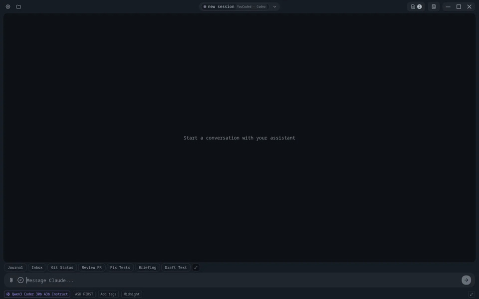
Just ask
A request is typed ("brief me on tomorrow's econ midterm"), sent, the assistant pulls the notes and the brief lands. Runs at 1.6× so the brief is on screen.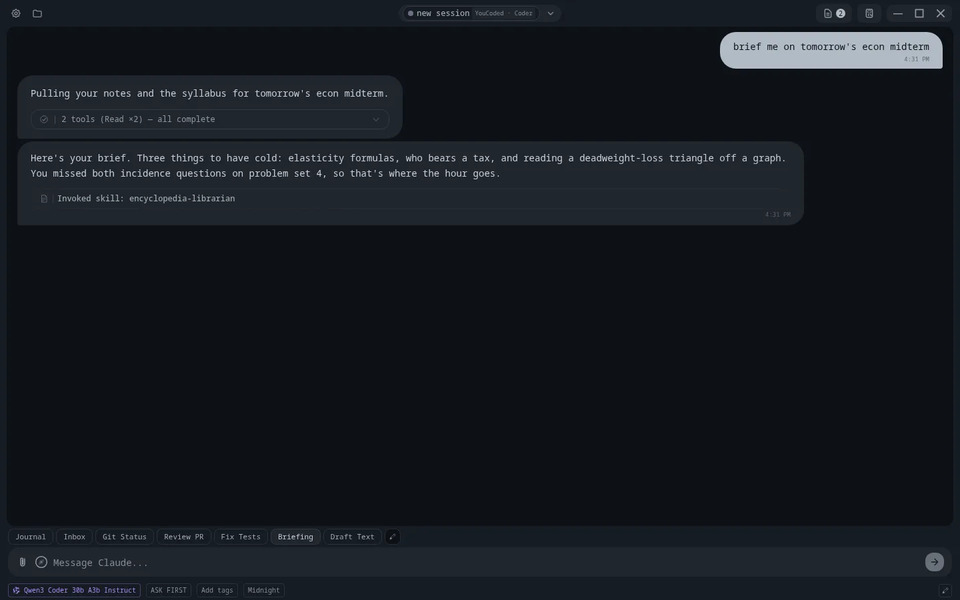
Describe a look
"build me a theme with the vibe of outdoor anime art" is sent under bar 5; the music drops out for half a beat and the whole app turns golden on the downbeat of bar 6 (the first drop of the track). Two community looks follow one bar apart, each with a chime, a backdrop wash and a costume change; bar 9 holds the last look while the sub-line lands. Ten seconds instead of fourteen, and it sits in the first quarter of the video where it hooks a viewer.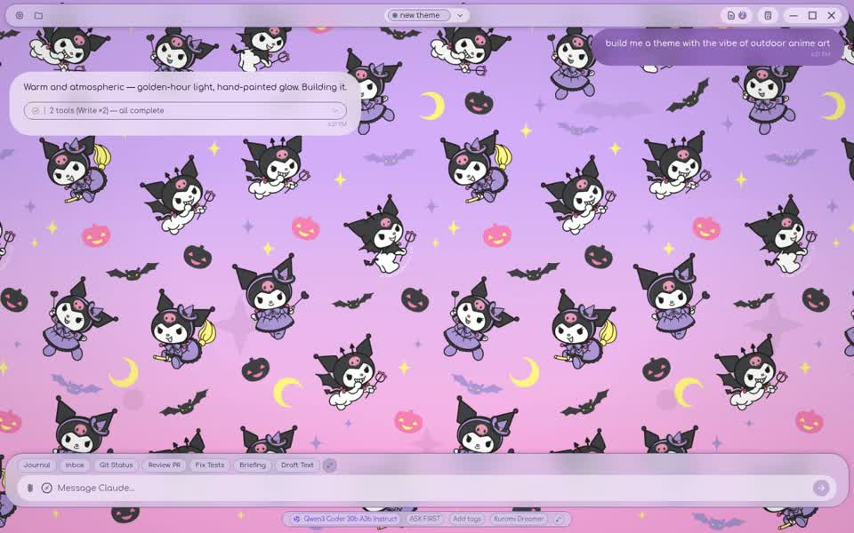
Pick your model
The status bar's model chip is clicked and the Model popup opens on a favourites list that already holds a Claude, a DeepSeek, a Grok and a ChatGPT model; one is picked, the chip in the status bar changes, the next reply comes from it. What the picker shows is exactly what it shows today: model names and providers, no prices (your note: nothing faked here).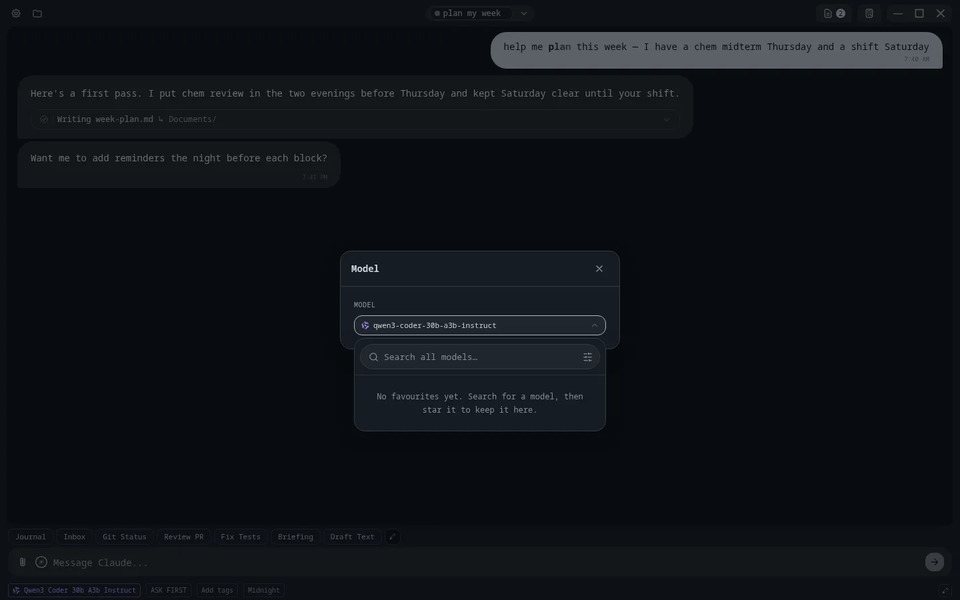
Your files, beside the chat, and where they live
Attach the spreadsheet, ask for the sort and the totals row, the Session Files panel shows the changed sheet (bars 13–16, as now). On bar 16 the Projects button opens project view: the project's hero, its Files tree with the spreadsheet in it, one click to Context showing the notes the assistant follows (bars 16–18).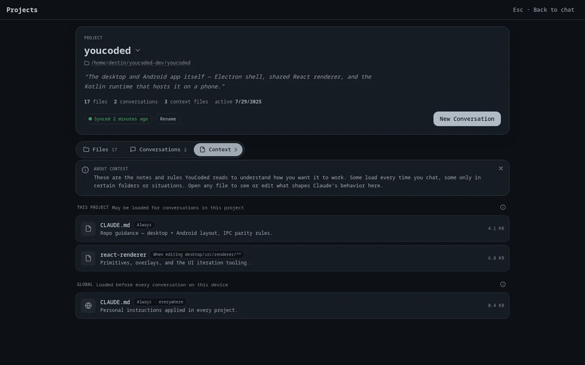
Play while it works
Friends lobby with Jake online and a Challenge; Connect 4 with moves both ways; one chess move; the Flappy flight on the hook's last two bars, the host diving into the game to become the bird.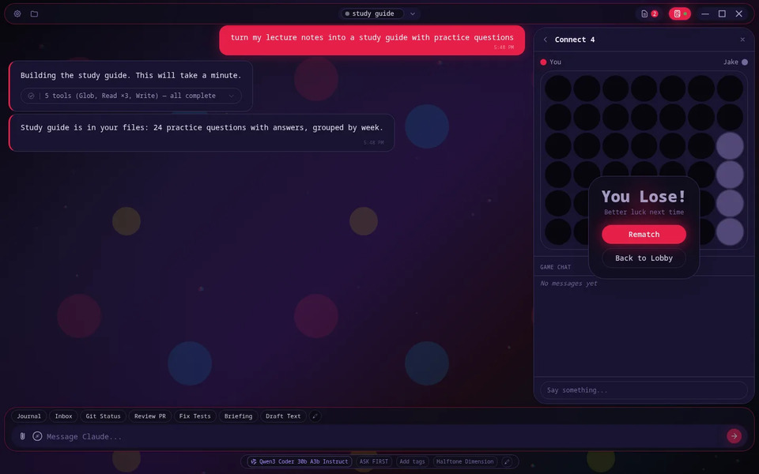
Every conversation, findable
All Sessions → Resume; the Resume browser; "econ" narrows it to "econ midterm brief"; a tag and a note in the Organize sheet; "plan my week" dragged into place on the strip. Already re-filmed in the student persona.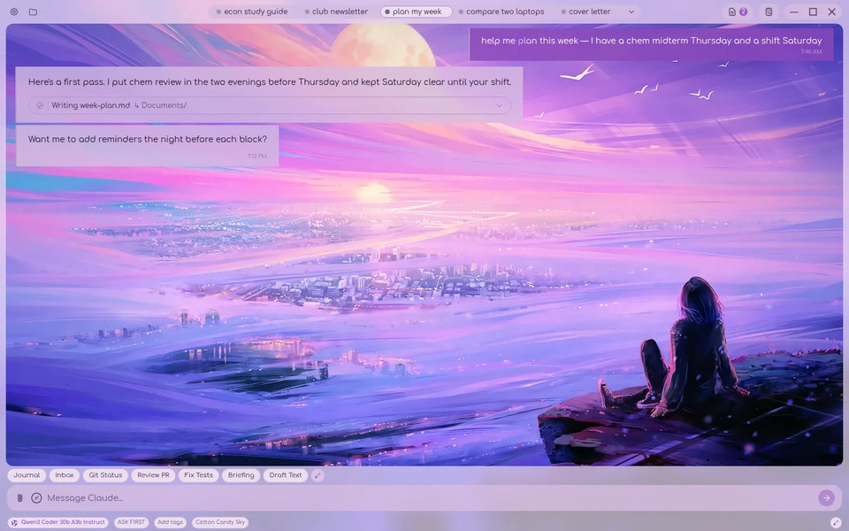
Pick up on any device
The chat on the laptop (bar 28). The phone slides in with no conversation open, just its session list; it taps the session (bar 29) and the PHONE asks "This session is active on Desktop — take over here?"; Take over, and the conversation loads on the phone (bars 30–31). On bar 32 the phone opens its project files: the same Q3-sales.xlsx and notes, already there. No Settings pages, no QR code.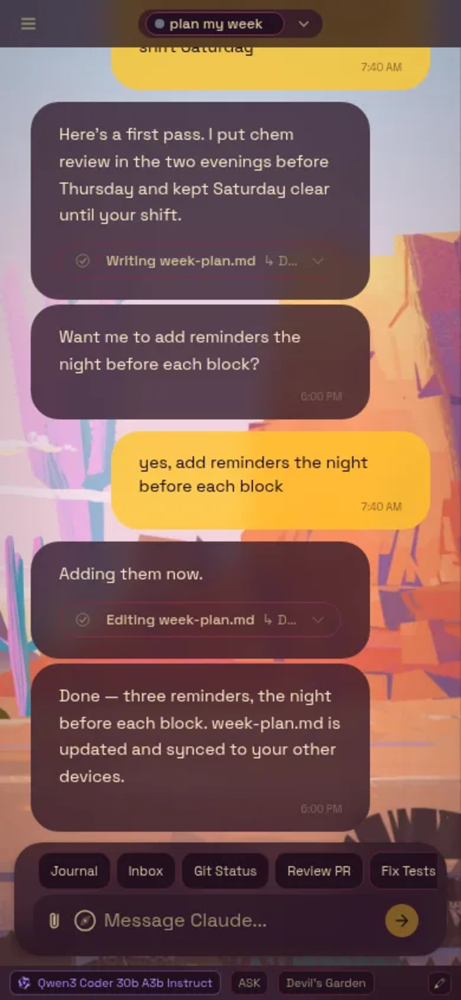
The WeCoded marketplace
The skills drawer opens from the composer, its marketplace button opens the Marketplace on the second drop of the track: the featured hero, the "Destin's picks" and "If you journal" rails (bars 33–34). The Remember card is opened: its detail page, "What this can do", Install (bars 35–36). Back in the chat, the skills drawer lists Remember under Installed and a Remember chip sits in the quick-action row (bar 37).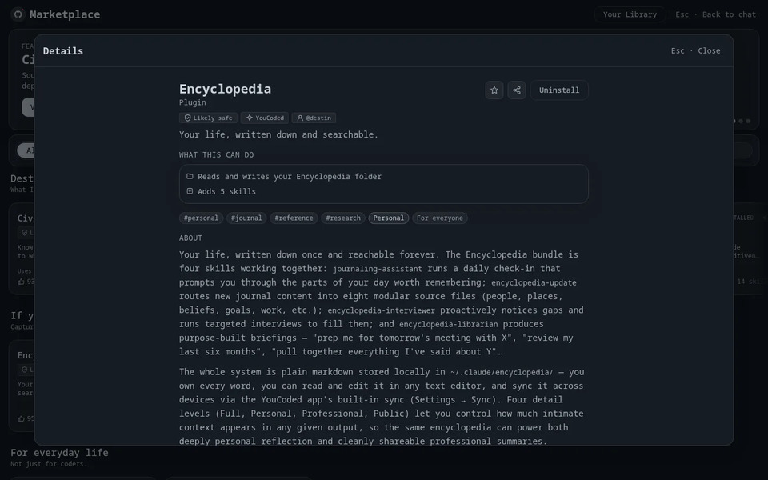
Close
The window settles smaller; the wordmark, the platforms line and the link; the host waves and cheers on the final hit; a fade to black under the music's tail.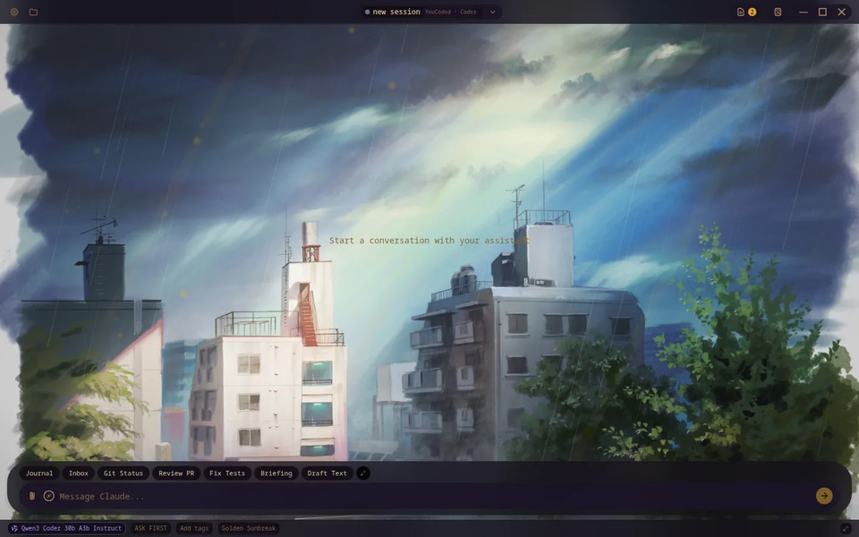
The music, re-arranged to 44 bars
| Bars | Section | Beat |
|---|---|---|
| 0–1 | Intro: arp, pad, riser | Cold open |
| 2–4 | Groove (drums in) | Just ask |
| 5 | Riser, fill, silence gap | The theme request is sent, the reply lands |
| 6–9 | Drop 1: full groove + hook, accents on 7 and 8 | The three looks |
| 10–12 | Groove | Pick your model |
| 13–17 | Groove, lead enters on 16 | Files, then project view on 16 |
| 18–23 | Hook | Games; the flight on 22–23 |
| 24–25 / 26–27 | Break / build | Conversations: the browser, then the drag under the snare roll |
| 28–32 | Half-time groove, riser on 32 | Any device |
| 33–37 | Drop 2: brighter filter, hook | Marketplace opens on the drop; Install on 35 |
| 38–42 | Outro | Close |
| 43 | Final hit, tail | Wordmark, fade |
The mascot
You said some of the unthemed mascots have weird empty eyes and that the official designs can be reworked, with new rigs, eyes and mouths kept as real alternate styles. Below is every face the rigs have today. The default rig (top row) is what Midnight, Meadow Mist, Cotton Candy Sky, Devil's Garden and Crème wear, tinted with each theme's accent; Golden Sunbreak's rig shares its face design.
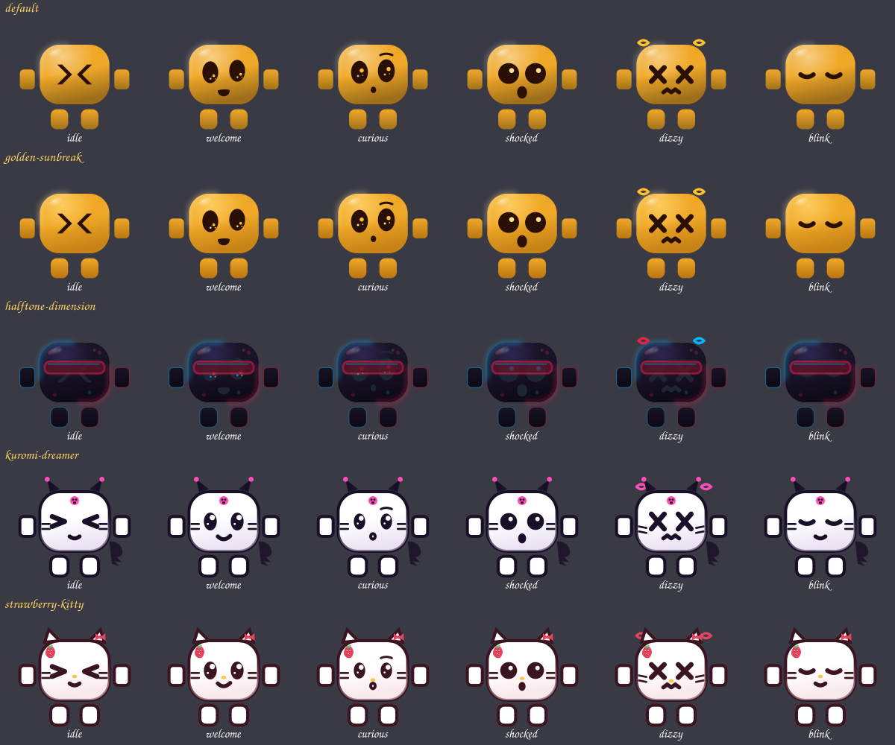
- Faces. Two or three new eye-and-mouth sets for the default rig, drawn as real rig faces (so they could ship as alternate styles later): for example, oval eyes with a lid and a small iris highlight instead of the big black discs; a relaxed mouth line; brows that can rise. Shown to you as a sheet like the one above, in every pose, before anything moves.
- Motion. A crouch before every hop and a stretch on the way up; the body leans into its direction of travel and tucks at the top; a squash on landing that settles in two small bounces; arms and companions trail the body and settle after it; a soft contact shadow on the title bar that shrinks in the air; breathing instead of bobbing; eyes that look toward what is about to happen and a blink before an action; a particle poof on costume changes; take-off early, landing exactly on the beat.
- The clip. About ten seconds, renders in under a minute: idle on a title bar, a hop to a new perch with a costume change, the dive, a wave. Every round of your notes is a one-minute render, not a four-minute one.
Dev-only fakes the new beats need
| Beat | Fake | Why |
|---|---|---|
| Files + project view | A student project ("Econ 201") with files, two conversations and a context note | The only populated project in the workbench is the YouCoded code project |
| Marketplace | Install sticks for the session and adds a quick-action chip | Install is a no-op in the workbench today |
| Any device | The take-over lease fake on the phone side, device name "Desktop" | Today the fake raises the dialog on the laptop |
| Pick your model | DeepSeek catalog rows; favourites seeded with Claude, DeepSeek, Grok, GPT | The picker opens on an empty favourites list today |
| Pick your model | none | The picker and its five-model catalog are populated; nothing is priced and nothing will be |
All three land on the app's feat/promo-workbench-fakes branch (dev-only, nothing ships to users).